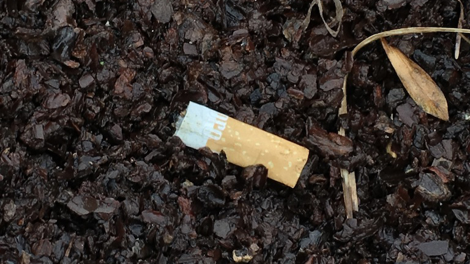
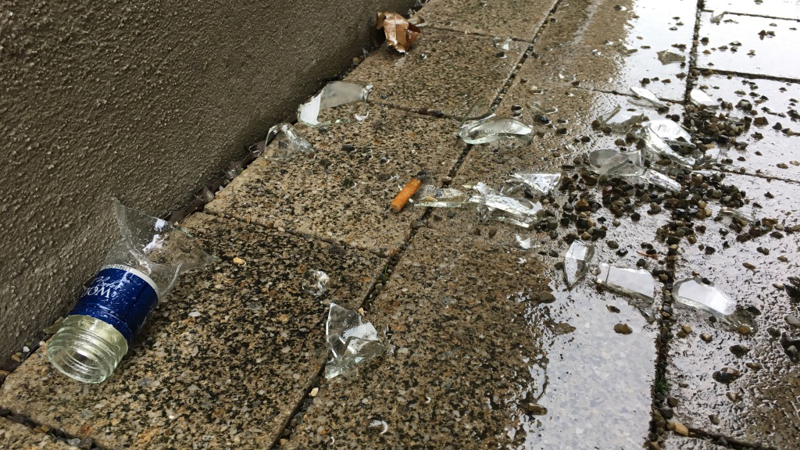
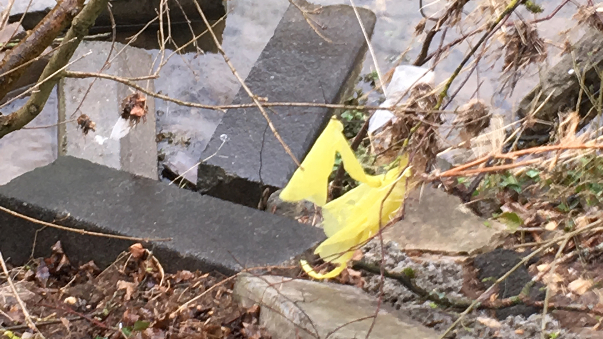
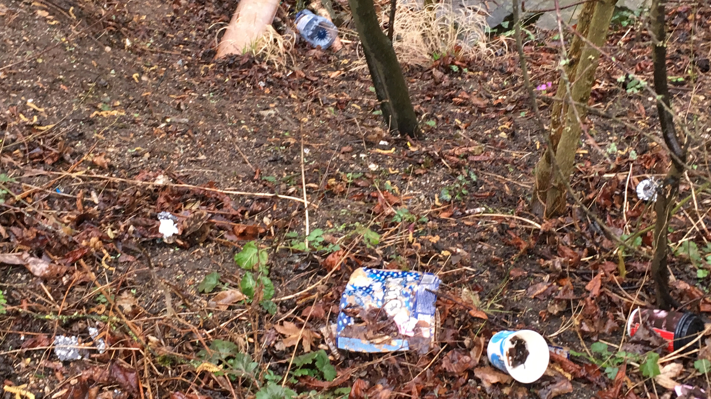

OBSERVATION
Auf dem Weg vom Zapp zum Bahnhofsgebäude haben wir darauf geachtet, wie viel Müll wir unserwegs finden.
Unten sind einige unserer Eindrücke zu sehen.
3,75%
Glas
Glas
18,75%
Papier
Papier
50%
Plastik
Plastik
27,5%
Restmüll
Restmüll
MOODS






FAZIT
Obwohl Schwäbisch Gmünd eine Stadt ist, die auf den ersten Blick sauber und
aufgeräumt wirkt und die Strecke zwischen Zapp und Bahnhof gerade einmal 800m
lang ist, haben wir alle ein bis zwei Meter Müll gefunden.
Hierbei ist uns aufgefallen, dass vor allem biologisch nicht abbaubarer Müll
zu finden war, wohingegen kein Biomüll gefunden wurde.
Außerdem ist uns aufgefallen, dass vor allem Mülleimer selbst ein Hauptsammelpunkt
für Müll auf dem Boden ist.